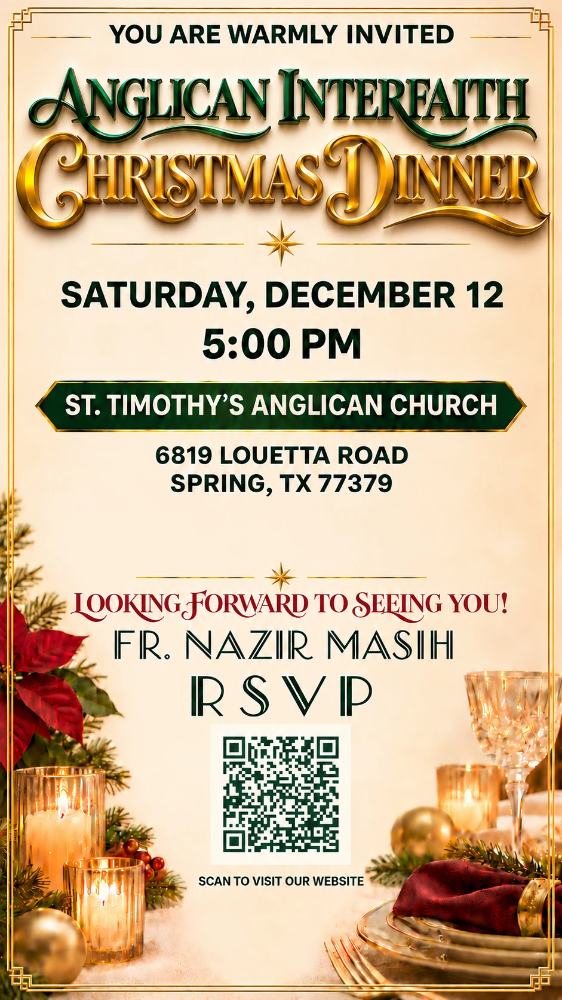

Anglican Interfaith Center
A place for people of different faiths to meet, listen, and learn from one another.
About the centerSt. Timothy’s Anglican Church
6819 Louetta Road, Spring, TX 77379

Explore interfaith gatherings, ministry reports, Anglican faith, and Christian reflections.
A shared meal and a conversation about fasting, respect, and reconciliation.

Campus fellowship, Urdu worship, and relationships with local faith communities.
Campus outreach during the pandemic, student lunches, Bible study, and interfaith visits.

A guide to Anglican worship, interfaith dialogue, and student ministry.

A short Christian reflection in English and Urdu.
Rooted in the Anglican tradition, the center welcomes people of all faiths and people with no religious affiliation. We want to make room for honest questions and help neighbors understand what matters to one another.

Give each person room to explain their beliefs and experiences in their own words.
Bring honest questions and give others the same freedom to ask about your tradition.
Talk about what your community needs and where neighbors can work together.

Come as you are. You’re welcome to listen, ask questions, and share what your own tradition means to you.

Thanksgiving Dialogue Gathering venue
St. Timothy’s Anglican Church